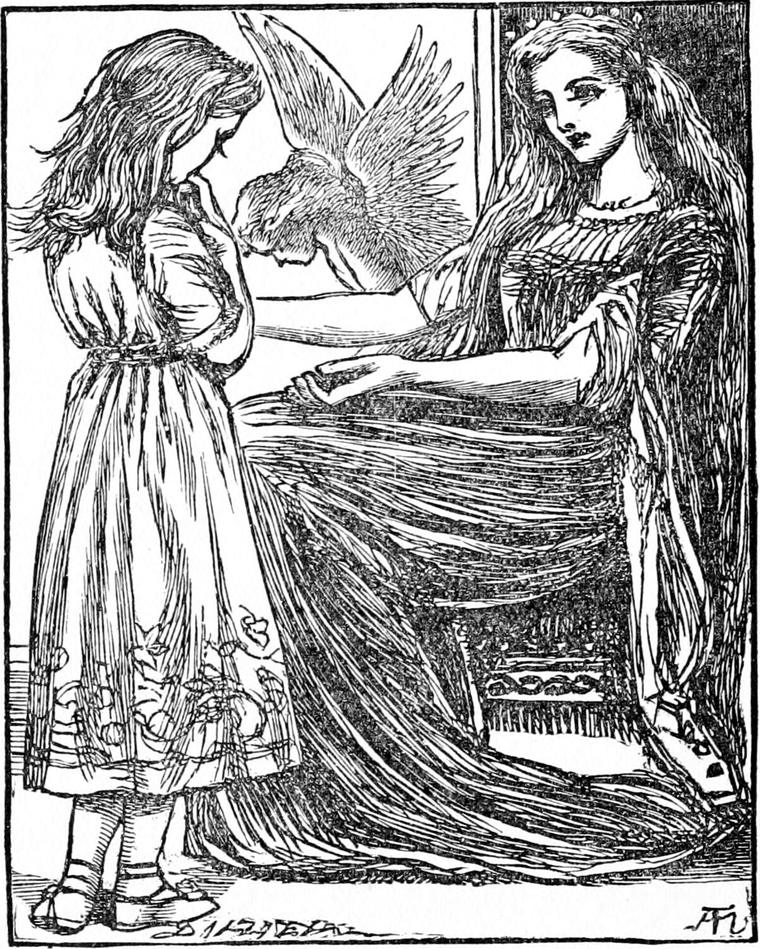

'Come in, Irene,' said the silvery voice of her grandmother.
The princess opened the door and peeped in. But the room was quite dark and there was no sound of the spinning-wheel. She grew frightened once more, thinking that, although the room was there, the old lady might be a dream after all. Every little girl knows how dreadful it is to find a room empty where she thought somebody was; but Irene had to fancy for a moment that the person she came to find was nowhere at all. She remembered, however, that at night she spun only in the moonlight, and concluded that must be why there was no sweet, bee-like humming: the old lady might be somewhere in the darkness. Before she had time to think another thought, she heard her voice again, saying as before: 'Come in, Irene.' From the sound, she understood at once that she was not in the room beside her. Perhaps she was in her bedroom. She turned across the passage, feeling her way to the other door. When her hand fell on the lock, again the old lady spoke:
'Shut the other door behind you, Irene. I always close the door of my workroom when I go to my chamber.'
Irene wondered to hear her voice so plainly through the door: having shut the other, she opened it and went in. Oh, what a lovely haven to reach from the darkness and fear through which she had come! The soft light made her feel as if she were going into the heart of the milkiest pearl; while the blue walls and their silver stars for a moment perplexed her with the fancy that they were in reality the sky which she had left outside a minute ago covered with rainclouds.
'I've lighted a fire for you, Irene: you're cold and wet,' said her grandmother.
Then Irene looked again, and saw that what she had taken for a huge bouquet of red roses on a low stand against the wall was in fact a fire which burned in the shapes of the loveliest and reddest roses, glowing gorgeously between the heads and wings of two cherubs of shining silver. And when she came nearer, she found that the smell of roses with which the room was filled came from the fire-roses on the hearth. Her grandmother was dressed in the loveliest pale blue velvet, over which her hair, no longer white, but of a rich golden colour, streamed like a cataract, here falling in dull gathered heaps, there rushing away in smooth shining falls. And ever as she looked, the hair seemed pouring down from her head and vanishing in a golden mist ere it reached the floor. It flowed from under the edge of a circle of shining silver, set with alternated pearls and opals. On her dress was no ornament whatever, neither was there a ring on her hand, or a necklace or carcanet about her neck. But her slippers glimmered with the light of the Milky Way, for they were covered with seed-pearls and opals in one mass. Her face was that of a woman of three-and-twenty.
The princess was so bewildered with astonishment and admiration that she could hardly thank her, and drew nigh with timidity, feeling dirty and uncomfortable. The lady was seated on a low chair by the side of the fire, with hands outstretched to take her, but the princess hung back with a troubled smile.

'Why, what's the matter?' asked her grandmother. 'You haven't been doing anything wrong—I know that by your face, though it is rather miserable. What's the matter, my dear?'
And she still held out her arms.
'Dear grandmother,' said Irene, 'I'm not so sure that I haven't done something wrong. I ought to have run up to you at once when the long-legged cat came in at the window, instead of running out on the mountain and making myself such a fright.'
'You were taken by surprise, my child, and you are not so likely to do it again. It is when people do wrong things wilfully that they are the more likely to do them again. Come.'
And still she held out her arms.
'But, grandmother, you're so beautiful and grand with your crown on; and I am so dirty with mud and rain! I should quite spoil your beautiful blue dress.'
With a merry little laugh the lady sprung from her chair, more lightly far than Irene herself could, caught the child to her bosom, and, kissing the tear-stained face over and over, sat down with her in her lap.
'Oh, grandmother! You'll make yourself such a mess!' cried Irene, clinging to her.
'You darling! do you think I care more for my dress than for my little girl? Besides—look here.'
As she spoke she set her down, and Irene saw to her dismay that the lovely dress was covered with the mud of her fall on the mountain road. But the lady stooped to the fire, and taking from it, by the stalk in her fingers, one of the burning roses, passed it once and again and a third time over the front of her dress; and when Irene looked, not a single stain was to be discovered.
'There!' said her grandmother, 'you won't mind coming to me now?'
But Irene again hung back, eying the flaming rose which the lady held in her hand.
'You're not afraid of the rose—are you?' she said, about to throw it on the hearth again.
'Oh! don't, please!' cried Irene. 'Won't you hold it to my frock and my hands and my face? And I'm afraid my feet and my knees want it too.'
'No, answered her grandmother, smiling a little sadly, as she threw the rose from her; 'it is too hot for you yet. It would set your frock in a flame. Besides, I don't want to make you clean tonight.
I want your nurse and the rest of the people to see you as you are, for you will have to tell them how you ran away for fear of the long-legged cat. I should like to wash you, but they would not believe you then. Do you see that bath behind you?'
The princess looked, and saw a large oval tub of silver, shining brilliantly in the light of the wonderful lamp.
'Go and look into it,' said the lady.
Irene went, and came back very silent with her eyes shining.
'What did you see?' asked her grandmother.
'The sky, and the moon and the stars,' she answered. 'It looked as if there was no bottom to it.'
The lady smiled a pleased satisfied smile, and was silent also for a few moments. Then she said:
'Any time you want a bath, come to me. I know YOU have a bath every morning, but sometimes you want one at night, too.'
'Thank you, grandmother; I will—I will indeed,' answered Irene, and was again silent for some moments thinking. Then she said: 'How was it, grandmother, that I saw your beautiful lamp—not the light of it only—but the great round silvery lamp itself, hanging alone in the great open air, high up? It was your lamp I saw—wasn't it?'
'Yes, my child—it was my lamp.'
'Then how was it? I don't see a window all round.'
'When I please I can make the lamp shine through the walls—shine so strong that it melts them away from before the sight, and shows itself as you saw it. But, as I told you, it is not everybody can see it.'
'How is it that I can, then? I'm sure I don't know.'
'It is a gift born with you. And one day I hope everybody will have it.'
'But how do you make it shine through the walls?'
'Ah! that you would not understand if I were to try ever so much to make you—not yet—not yet. But,' added the lady, rising, 'you must sit in my chair while I get you the present I have been preparing for you. I told you my spinning was for you. It is finished now, and I am going to fetch it. I have been keeping it warm under one of my brooding pigeons.'
Irene sat down in the low chair, and her grandmother left her, shutting the door behind her. The child sat gazing, now at the rose fire, now at the starry walls, now at the silver light; and a great quietness grew in her heart. If all the long-legged cats in the world had come rushing at her then she would not have been afraid of them for a moment. How this was she could not tell—she only knew there was no fear in her, and everything was so right and safe that it could not get in.
She had been gazing at the lovely lamp for some minutes fixedly: turning her eyes, she found the wall had vanished, for she was looking out on the dark cloudy night. But though she heard the wind blowing, none of it blew upon her. In a moment more the clouds themselves parted, or rather vanished like the wall, and she looked straight into the starry herds, flashing gloriously in the dark blue. It was but for a moment. The clouds gathered again and shut out the stars; the wall gathered again and shut out the clouds; and there stood the lady beside her with the loveliest smile on her face, and a shimmering ball in her hand, about the size of a pigeon's egg.
'There, Irene; there is my work for you!' she said, holding out the ball to the princess.
She took it in her hand, and looked at it all over. It sparkled a little, and shone here and there, but not much. It was of a sort of grey-whiteness, something like spun glass.
'Is this all your spinning, grandmother?' she asked.
'All since you came to the house. There is more there than you think.'
'How pretty it is! What am I to do with it, please?'
'That I will now explain to you,' answered the lady, turning from her and going to her cabinet. She came back with a small ring in her hand. Then she took the ball from Irene's, and did something with the ring—Irene could not tell what.
'Give me your hand,' she said. Irene held up her right hand.
'Yes, that is the hand I want,' said the lady, and put the ring on the forefinger of it.
'What a beautiful ring!' said Irene. 'What is the stone called?'
'It is a fire-opal.'
'Please, am I to keep it?'
'Always.'
'Oh, thank you, grandmother! It's prettier than anything I ever saw, except those—of all colours-in your—Please, is that your crown?'
'Yes, it is my crown. The stone in your ring is of the same sort—only not so good. It has only red, but mine have all colours, you see.'
'Yes, grandmother. I will take such care of it! But—' she added, hesitating.
'But what?' asked her grandmother.
'What am I to say when Lootie asks me where I got it?'
'You will ask her where you got it,' answered the lady smiling.
'I don't see how I can do that.'
'You will, though.'
'Of course I will, if you say so. But, you know, I can't pretend not to know.'
'Of course not. But don't trouble yourself about it. You will see when the time comes.'
So saying, the lady turned, and threw the little ball into the rose fire.
'Oh, grandmother!' exclaimed Irene; 'I thought you had spun it for me.'
'So I did, my child. And you've got it.'
'No; it's burnt in the fire!'
The lady put her hand in the fire, brought out the ball, glimmering as before, and held it towards her. Irene stretched out her hand to take it, but the lady turned and, going to her cabinet, opened a drawer, and laid the ball in it.
'Have I done anything to vex you, grandmother?' said Irene pitifully.
'No, my darling. But you must understand that no one ever gives anything to another properly and really without keeping it. That ball is yours.'
'Oh! I'm not to take it with me! You are going to keep it for me!'
'You are to take it with you. I've fastened the end of it to the ring on your finger.'
Irene looked at the ring.
'I can't see it there, grandmother,' she said.
'Feel—a little way from the ring—towards the cabinet,' said the lady.
'Oh! I do feel it!' exclaimed the princess. 'But I can't see it,' she added, looking close to her outstretched hand.
'No. The thread is too fine for you to see it. You can only feel it. Now you can fancy how much spinning that took, although it does seem such a little ball.'
'But what use can I make of it, if it lies in your cabinet?'
'That is what I will explain to you. It would be of no use to you—it wouldn't be yours at all if it did not lie in my cabinet. Now listen. If ever you find yourself in any danger—such, for example, as you were in this same evening—you must take off your ring and put it under the pillow of your bed. Then you must lay your finger, the same that wore the ring, upon the thread, and follow the thread wherever it leads you.'
'Oh, how delightful! It will lead me to you, grandmother, I know!'
'Yes. But, remember, it may seem to you a very roundabout way indeed, and you must not doubt the thread. Of one thing you may be sure, that while you hold it, I hold it too.'
'It is very wonderful!' said Irene thoughtfully. Then suddenly becoming aware, she jumped up, crying:
'Oh, grandmother! here have I been sitting all this time in your chair, and you standing! I beg your pardon.'
The lady laid her hand on her shoulder, and said:
'Sit down again, Irene. Nothing pleases me better than to see anyone sit in my chair. I am only too glad to stand so long as anyone will sit in it.'
'How kind of you!' said the princess, and sat down again.
'It makes me happy,' said the lady.
'But,' said Irene, still puzzled, 'won't the thread get in somebody's way and be broken, if the one end is fast to my ring, and the other laid in your cabinet?'
'You will find all that arrange itself. I am afraid it is time for you to go.'
'Mightn't I stay and sleep with you tonight, grandmother?'
'No, not tonight. If I had meant you to stay tonight, I should have given you a bath; but you know everybody in the house is miserable about you, and it would be cruel to keep them so all night. You must go downstairs.'
'I'm so glad, grandmother, you didn't say "Go home," for this is my home. Mayn't I call this my home?'
'You may, my child. And I trust you will always think it your home. Now come. I must take you back without anyone seeing you.'
'Please, I want to ask you one question more,' said Irene. 'Is it because you have your crown on that you look so young?'
'No, child,' answered her grandmother; 'it is because I felt so young this evening that I put my crown on. And I thought you would like to see your old grandmother in her best.'
'Why do you call yourself old? You're not old, grandmother.'
'I am very old indeed. It is so silly of people—I don't mean you, for you are such a tiny, and couldn't know better—but it is so silly of people to fancy that old age means crookedness and witheredness and feebleness and sticks and spectacles and rheumatism and forgetfulness! It is so silly! Old age has nothing whatever to do with all that. The right old age means strength and beauty and mirth and courage and clear eyes and strong painless limbs. I am older than you are able to think, and—'
'And look at you, grandmother!' cried Irene, jumping up and flinging her arms about her neck. 'I won't be so silly again, I promise you. At least—I'm rather afraid to promise—but if I am, I promise to be sorry for it—I do. I wish I were as old as you, grandmother. I don't think you are ever afraid of anything.'
'Not for long, at least, my child. Perhaps by the time I am two thousand years of age, I shall, indeed, never be afraid of anything. But I confess I have sometimes been afraid about my children—sometimes about you, Irene.'
'Oh, I'm so sorry, grandmother! Tonight, I suppose, you mean.'
'Yes—a little tonight; but a good deal when you had all but made up your mind that I was a dream, and no real great-great-grandmother. You must not suppose I am blaming you for that. I dare say you could not help it.'
'I don't know, grandmother,' said the princess, beginning to cry. 'I can't always do myself as I should like. And I don't always try. I'm very sorry anyhow.'
The lady stooped, lifted her in her arms, and sat down with her in her chair, holding her close to her bosom. In a few minutes the princess had sobbed herself to sleep. How long she slept I do not know. When she came to herself she was sitting in her own high chair at the nursery table, with her doll's house before her.